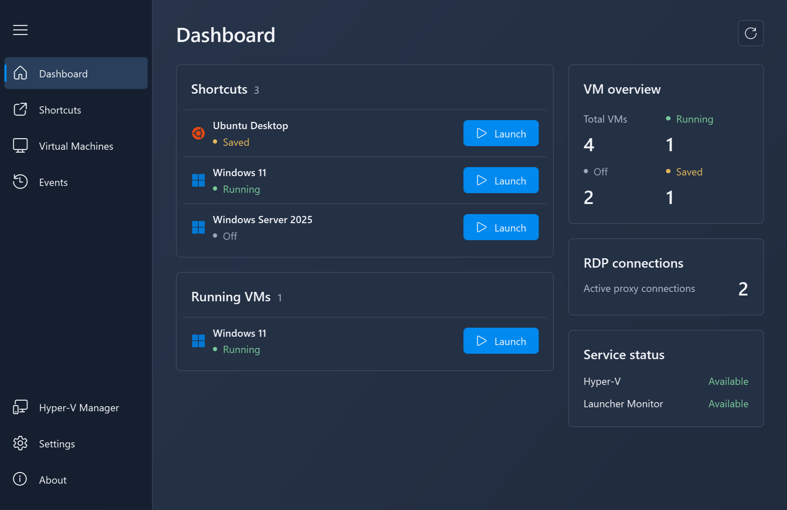
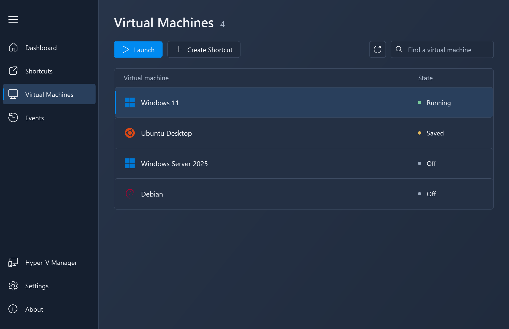
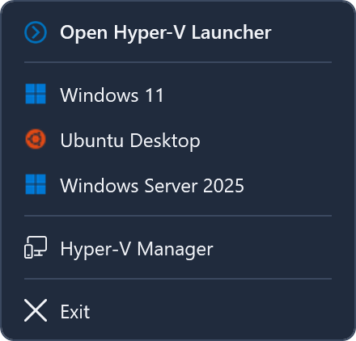
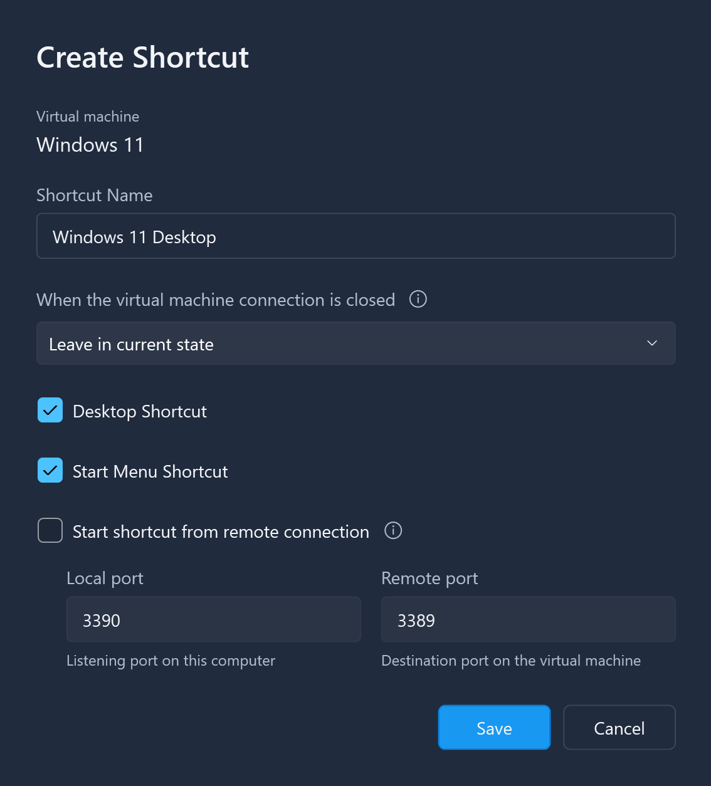
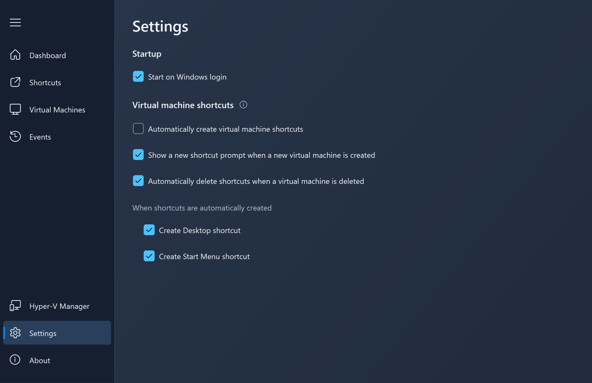
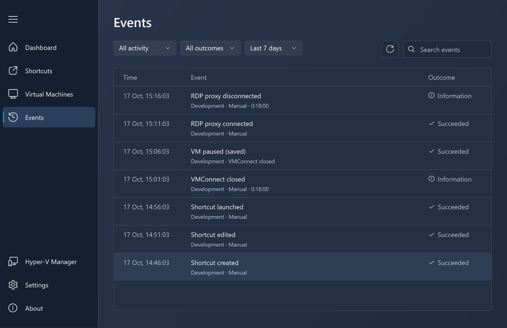

Hyper-V Launcher guide
Use Hyper-V Launcher 1.0.4 to manage local VMs, launch shortcuts, configure remote connections, and review activity.
What’s new in 1.0.4
This release improves list loading, VM connection startup, and tray menu behavior.
- More responsive lists: Dashboard sections load independently, and Dashboard, Shortcuts, and Virtual Machines use bulk VM status refreshes. Missing guest OS details for running VMs are refreshed in the background.
- Earlier connection window: LaunchPad opens VMConnect while VM startup confirmation is still in progress.
- RDP address fallback: remote connections can try another reported guest address when the first connection attempt fails.
- Tray menu fixes: the menu keeps the position where you clicked the tray icon, opens with corrected placement, and dismisses when you click outside it.
- Visual refinements: clearer dashboard spacing and VM totals, refreshed application icons, and a sharper About-page logo.
What’s new in 1.0.3
This release brings a refreshed Console, a dashboard, recorded activity, and service-backed VM management.
- Dashboard: launch configured shortcuts and running VMs, see VM state totals and active RDP proxy connections, and check Hyper-V and Launcher Monitor availability.
- Refreshed Console: a dark interface, collapsible navigation, list search and refresh controls, current VM states, context menus, keyboard and double-click launching, and clearer loading and empty states. Launch all selected shortcuts or VMs while preserving multiple selection in context menus.
- Guest OS details and icons: identify VMs by their reported operating system. Shortcuts save their icon at creation; shortcuts without saved icon metadata use a default icon. The compact tray menu and VM notifications also show VM icons.
- Monitor service: Console and LaunchPad can run without elevation while Monitor handles privileged VM and shortcut operations. Improved service access for standard users and per-VM power-action coordination make management more reliable.
- Remote connections and Events: Monitor handles starting VMs and forwarding connections to the guest, while the Events page records VM, shortcut, and connection activity with filters and details.
- Shortcut setup: saved creation defaults, shortcut name and port validation, clearer port guidance, and feedback when saving settings fails.
- Help and diagnostics: contextual guide links, a Hyper-V Manager navigation shortcut, and an About page with the app version, contact links, and support archive export. Logs now include application version information.
- Reliability: a responsive tray menu while settings load, preservation of existing tray entries if a refresh fails, clearer distinction between missing Hyper-V and a stopped service, less repetitive unavailable-service logging, and installer process-shutdown and packaging fixes.
Use the dashboard and VM lists
Open Dashboard for configured shortcuts, running VMs, VM state totals, active RDP proxy connections, and service availability. Launch shortcuts and connect to running VMs from this page.
The Shortcuts and Virtual Machines pages show current VM states and guest OS icons. Use the search box to find a machine and the refresh control to reload the list.
Select several rows with Ctrl or Shift, then choose Launch to launch all selected entries. Right-click a selected row to use its context menu without losing the selection. You can also double-click a row to launch it.
Guest OS information depends on what the VM reports to Hyper-V. Missing details for running VMs are refreshed in the background; refresh the list to see newly detected information. A shortcut keeps the icon saved when it was created; older shortcuts without saved icon metadata show the default icon.


Requirements and installation
Hyper-V Launcher runs on Windows x64 and manages virtual machines on your local computer. You need Hyper-V enabled and a VM already created in Hyper-V Manager.
For a Windows desktop host, Microsoft lists Windows 10 or Windows 11 Pro and Enterprise as editions that support Hyper-V. Windows Home does not include the Hyper-V role. Your hardware must also support virtualization. See Microsoft’s Hyper-V requirements and instructions for enabling Hyper-V.
Download Hyper-V Launcher, run the setup, then open Hyper-V Launcher Console from the Start Menu. Use Hyper-V Manager to create and configure your VMs before adding launcher shortcuts.
Setup installs Hyper-V Launcher Service (Launcher Monitor), which handles privileged VM operations, shortcut changes, automatic detection, and remote connections. Console and LaunchPad can run without elevation; keep the service running for these operations.
Create a desktop shortcut for a Hyper-V virtual machine
A shortcut opens a local VM without navigating through Hyper-V Manager each time. You can place it on your desktop, in the Start Menu, or both.
- Open Virtual Machines in Hyper-V Launcher.
- Select the VM you want to use and click Create Shortcut.
- Enter a shortcut name that you will recognize.
- Select Desktop Shortcut, Start Menu Shortcut, or both.
- Choose what should happen when the VM connection closes, then click Save.
Double-click the desktop shortcut or open it from the Start Menu. Hyper-V Launcher starts a stopped or saved VM and opens its connection window while startup is being confirmed.
You can also select a configured shortcut on the Shortcuts page and click Launch. To change its name or close action later, select it and click Edit. New shortcuts use your saved creation defaults; the dialog checks the name and remote-connection ports before saving.


Launch Hyper-V virtual machines from the system tray
Click or right-click the Hyper-V Launcher icon in the Windows notification area, then select a configured shortcut from the menu. The shortcut uses the same close action as when launched from the desktop.
If the icon is hidden, check the notification area’s hidden icons menu. Choose Open Hyper-V Launcher in the tray menu to manage your shortcuts.
In Settings, enable Start on Windows login to have the tray application start when you sign in. A VM must have a configured shortcut to appear in the tray menu.


Pause or shut down a VM when its window closes
Each shortcut has its own close action. Choose it when creating a shortcut, or select an existing shortcut on the Shortcuts page and click Edit.
- Leave in current state
- Closing the connection window does not request a VM state change. A running VM can keep running in the background.
- Pause the Virtual Machine
- This option saves the VM’s state. Launching the shortcut again starts the saved VM so you can continue from that state.
- Shutdown the Virtual Machine
- Requests a guest shutdown. The implementation can fall back to turning off the VM when a particular shutdown failure occurs, so save your work inside the guest before closing the connection.
Click Save, then launch the configured shortcut to use the selected action. The action runs when that shortcut’s VM connection window closes. Opening a separate connection directly through Hyper-V Manager does not use the shortcut’s close action.


Start a VM from a remote connection
Enable Start shortcut from remote connection when creating or editing a shortcut. Hyper-V Launcher listens on a port on the Hyper-V host. An incoming connection starts the VM and forwards traffic to the destination port inside the guest.
- Enable Remote Desktop inside a guest operating system that supports hosting Remote Desktop connections. Make sure it accepts connections and that the Hyper-V host can reach the guest over its virtual network.
- Choose an unused Local port on the Hyper-V host, for example 3390. Use a different local port for each shortcut with remote connections enabled; avoid ports already used by other services.
- Set Remote port to the guest's Remote Desktop listening port, usually 3389, then click Save.
- Keep Hyper-V Launcher Service running. From your Remote Desktop client, connect to the host's name or IP address followed by the local port, for example
my-hyperv-pc:3390. Sign in with the guest's credentials.
The local port belongs to the host; the remote port belongs to the VM. For example, a connection to my-hyperv-pc:3390 is forwarded to port 3389 on the guest. The guest must report an IP address to Hyper-V and be reachable from the host. If a reported guest address cannot be reached, the proxy can try another reported address. Allow the chosen host port through your firewall only for the networks and clients that need access; use a trusted network or VPN for remote access.
If the connection fails while the VM starts, wait for the guest and Remote Desktop service to become ready, then reconnect. Check the host port, guest networking, guest Remote Desktop settings, and that the launcher service is running.
The shortcut's close action can also run after a remote connection disconnects. The launcher waits until no other proxied connections to that VM remain, and ignores connections lasting two seconds or less. Save your guest work before disconnecting when using a shutdown action.
Automatically create and clean up VM shortcuts
Open Settings to choose how newly created and deleted VMs are handled. Settings are saved as you change the checkboxes.
- Enable Automatically create Virtual Machine shortcuts to create a shortcut when a new VM is detected. Choose Create Desktop shortcut and Create Start Menu shortcut for the locations you want.
- If you prefer to decide each time, turn off automatic creation and enable Show a new shortcut prompt when a new Virtual Machine is created. The prompt option is disabled while automatic creation is enabled.
- Enable Automatically delete shortcuts when a Virtual Machine is deleted to remove the associated shortcuts when deletion is detected.
These settings handle VM creation and deletion events. For machines you already have, create shortcuts from the Virtual Machines page. Automatic creation and cleanup depend on the installed Hyper-V Launcher Service.


Review activity and event details
Open Events to review recorded shortcut changes, VM connections, VM actions, and RDP proxy activity. Launcher Monitor owns the activity history.
Search events and filter by activity type, outcome, and time range. Select an event to open its details. Use Refresh for recent activity or Load older events when available to see earlier entries.
Check the recorded outcome and details when investigating a failed or unconfirmed operation.


Save a support archive
- Open About to check your installed application version and find the website, guide, and contact links.
- Choose Save support archive, select a destination, and save the
.zipfile. - File Explorer selects the saved archive. Review its contents before sharing it with hypervlauncher@andrezammit.com, along with the steps to reproduce the issue.
The archive includes available user and shared application logs, basic system information (including app version, Windows and runtime versions, architecture, culture, and time zone), and a collection report listing any unavailable or skipped logs. Settings, activity databases, and VM files are not collected.
Logs may contain VM names, usernames, file paths, and network addresses. The archive is saved locally; it is not sent automatically. If saving fails, check the destination folder and available disk space, then try again.
Troubleshooting Hyper-V Launcher
Hyper-V or Launcher Monitor is unavailable
Check the dashboard service status. If Hyper-V is not installed, enable it on a supported Windows edition. If it is installed but stopped, check Hyper-V Virtual Machine Management in Windows Services. Also check that Hyper-V Launcher Service is running, then refresh. These are separate services.
My virtual machine is not listed
Open Hyper-V Manager and confirm the VM exists on this computer. Hyper-V Launcher lists local VMs, not those on a remote host. Confirm Hyper-V is enabled and that you can access the local VM in Hyper-V Manager, then reopen the launcher to reload the list.
The VM is listed, but there is no desktop shortcut
A VM in the Virtual Machines list is not necessarily a configured shortcut. Select it, choose Create Shortcut, select Desktop Shortcut, and save. Automatic creation applies to newly detected VMs; it does not create desktop shortcuts for every existing machine when enabled.
The tray icon or a tray shortcut is missing
Check the hidden icons menu and confirm the tray application is running. If you closed it, you can start HyperVLauncher.Apps.Tray.exe from your Hyper-V Launcher installation folder. Enable Start on Windows login for future sign-ins. If only a VM entry is missing, check that it has a shortcut on the Shortcuts page.
The close action did not run
Check the action saved on the shortcut you launched. Use that configured shortcut rather than a connection opened directly in Hyper-V Manager, and close the VM connection window rather than just the launcher’s management window.
Automatic shortcut creation or deletion is not working
Check the corresponding checkbox in Settings. Open Windows Services and check that Hyper-V Launcher Service is running. Creation and deletion have separate settings; enabling one does not enable the other.